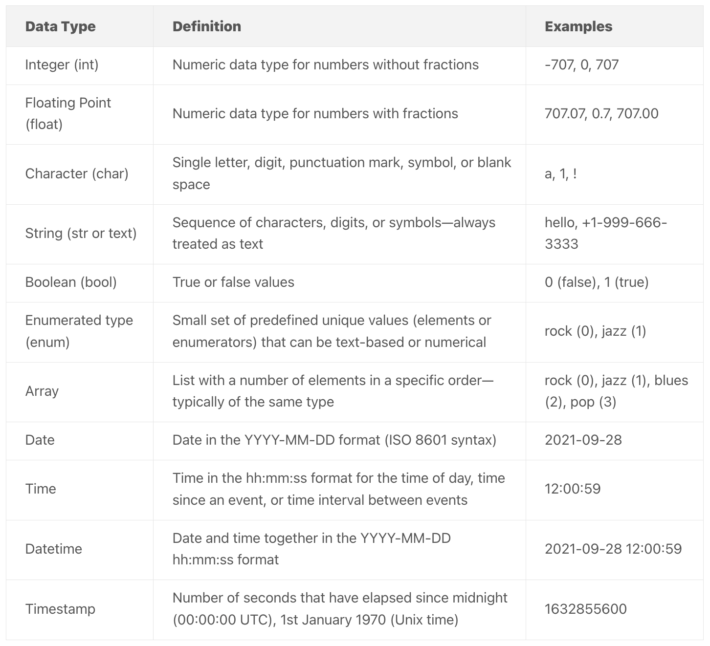

What and where of data
Where does data come from?
Both the United States Census Bureau and Statistics Canada collect a combination of survey data and administrative data. Survey data, like the decennial census or American Community Survey in the United States, involves asking people for information about themselves or another topic. Administrative data, like tax records, are collected by governments or other entities for the purpose of running programs or providing services.
Another type of data that is often used in urban analyses comes from remote sensing, which involves measuring the physical characteristics of an area from a distance (USGS). Spatial data collected via remote sensing is often used in analyses of the built or natural environment (e.g., land cover classification or urban growth). One example of this type of data is the satellite imagery layer in Google Maps:

Crowdsourced data, which is collected from the public - usually online or via social media or apps - often helps to fill information gaps left by official data sources. For example, FixMyStreet allows residents in the UK to report problems like graffiti or potholes in their neighborhood and sends the information directly to local authorities. OpenStreetMap is a popular crowdsourced mapping dataset with billions of data points representing buildings, streets, transit lines, and much more.

Web scraping, or extracting information from the internet, is another method for creating datasets. Since the data do not already exist and must be created, this can be more time-intensive than using existing datasets. However, packages like beautifulsoup or selenium in Python make this process easier.
Data sources for urban analysis
The table below lists a handful of websites where you can find freely available data about cities, the environment, land use, transportation, Indigenous communities, housing and homelessness. This is a non-exhaustive list; there are many other great data sources available. Note that municipalities’ open data portals typically contain information on all or most of these topics. For more information about census data specifically, see Canadian census data.
| Topic | Data sources |
|---|---|
| Cities | - Open data portals (e.g., Toronto, Montreal, & Vancouver) |
| Environment | - NASA’s Earth Science Data Systems (ESDS) Program - The Canadian Urban Environmental Health Research Consortium - Natural Resources Canada - Environment and Climate Change Canada |
| Land use | - OpenStreetMap - Land cover of Canada - Municipal-level zoning maps (e.g., in Toronto) |
| Transportation | - Metrolinx Open Data for the Greater Toronto Area - Canadian Urban Transit Association - Mobilizing Justice Hub - Transitland |
| Indigenous communities | - First Nations Data Centre - Native Land Digital |
| Housing and homelessness | - Housing - Statistics Canada - Housing data from Canada Mortgage and Housing Corporation |
In addition to free, open data like the datasets in the above table, there are also proprietary datasets that are useful for analyzing urban phenomena require payment to access. For example, cell phone mobility data from Spectus can be used to measure post-pandemic downtown recovery trends, real estate data from Costar can be used to assess vacancy rates or rent prices, and consumer data from Data Axle can be used to study the impact of new housing on migration patterns.
Data formats
Data format refers to how data is stored and structured. In practice, this is most relevant when loading and saving data. The data format you choose to use depends on the data’s size, structure, use, how it is being stored, and whether it is spatial (has a geometry column) or not.
Some of the most common data formats for non-spatial data are:
- CSV (comma separated values)
.csv - JSON (JavaScript Object Notation)
.json - XML (Extensible Markup Language)
.xml
Some of the most common data formats for spatial data are (see Spatial data & GIS for more information):
- GeoJSON
.geojson - GeoPackage
.gpkg - Shapefile
.shapfile - Geodatabase
.gdb
While the file formats above suffice for relatively small or simple datasets, very large or complex datasets require more efficient storage via formats like Parquet (see instructions for Python). Relational databases are another commonly used data storage format for “big data” because they are more efficient, faster to query, more secure, and can be accessed by multiple users.
Data types
It’s important to make sure that each variable in your dataset is in the right format so the computer interpets it correctly. For example, if you load a CSV file with a column representing the population of a census tract, you want to make sure this variable is interpreted as a number and not a string of characters. See the table below for a list of common data types, and see this link for a more detailed explanation of each one.

When coding in Python, you’ll also need to get acquainted with Python’s built-in data types, some of which are explained here - but don’t worry about this yet; we’ll cover this in more detail later.
Software and tools
When choosing which software to use to analyze or visualize data, one of the main considerations is whether the software is open source or proprietary. Open source software has its source code publicly available and can be modified by anyone on the internet. Proprietary software’s source code is not publicly available, is typically developed and updated by a closed group, and is licensed to users in exchange for payment. Read this link if you’re interested in learning more about the difference between the two.
In this course, we will focus on open source software because it is free and available to everyone. Below is a list of some of the main open source programming languages, software, and tools that we recommend using for data analysis and mapping.
| Purpose | Software/Tools |
|---|---|
| Mapping | QGIS, Python, R |
| Analyzing / visualizing data | Python, R, SQL |
| Graphic design / layouts | Inkscape, GIMP |
| Web development | HTML, CSS, Javascript, Svelte |
| Web-based maps/visualization | D3, MapLibre, PMtiles |
| Hosting / project management | GitHub |
Data analysis process
While is no set of specific step-by-step instructions for data analysis – each project requires unique data sources, variables, methodologies, and outputs – there is a general framework you should follow:
- Define the problem or research question. What question are you trying to answer with data? Is data analysis the best way to answer that question? Who is the audience for your data analysis, and what do they want to know?
- Collect data. What kind of data do you need to answer your research question, and where can you find it? Does it exist? In what format?
- Clean data. Make sure the data has appropriate variable names, does not have misspellings or other errors, and the variables are the correct data types. Get rid of any redundant or irrelevant data that you don’t need, and determine a method for dealing with any missing values.
- Analyze data. Start by exploring the data to understand its structure and any statistical patterns. Then perform your analysis – for example, are you trying to uncover trends, or measure the relationship among variables?
- Visualize data. Create plots, maps, or other visual representations that illustrate the structure, trends, or relationships present in your data.
- Present data. Clearly communicate your results to your intended audience. This could involve writing a report, or creating a presentation or interactive dashboard. Whatever gets your message across!
Getting help
Learning new software for data analysis or mapping can be confusing and frustrating. Luckily, there are a lot of great resources that can help!
The first place you should look when you’re confused about how to do something is the official documentation. For example, if you’re having trouble loading a CSV file in Python using the pandas package, take a look at this page on the pandas website. If you’re not sure how to create a spatial buffer in QGIS, check out the QGIS buffer operations page.
If you’re still stuck on a question, Google it! Chances are, someone else has dealt with a similar issue, and there is likely a community of people helping them out. For example, one of the most popular resources for coding is Stack Overflow, a website where programmers ask and answer questions. Responses with the most votes are shown at the top, making it easy to find helpful code snippets and explanations that you can adapt for your own needs. The website is so widely used that Stack Overflow posts will usually show up towards the top when you Google search coding questions.
There are also websites like W3Schools and GeeksforGeeks that offer online courses and tutorials covering everything from sorting a list in Python to building complicated statistical models. These websites show up often as results for relevant Google searches.
Finally, a word of caution about using AI chatbots like ChatGPT - while these chatbots can be extremely helpful for debugging code or providing instructions about how to do a spatial join in QGIS, be careful. They are often wrong, and sometimes make up packages or functions that don’t exist. Also, if you use chatbots for coding help, make sure you understand what they are telling you. Asking for guidance or hints about specific, discrete questions is much better than asking the chatbot to write an entire Python script for you. The more you rely on the chatbots, the less you will learn, and the less you will be able to do on your own. Learning coding in particular can feel like an uphill battle, but if you start with a solid foundation and thorough understanding of how it works, you will feel much more confident in your ability to tackle more complicated problems later on.
Along the same lines, there are tools like Jupyter AI that offer AI assistance integrated into your coding environment. While these can be very useful and help you code more efficiently, remember that the more you rely on tools like this early on in your coding journey, the more dependent you will be on them and the less you will learn.